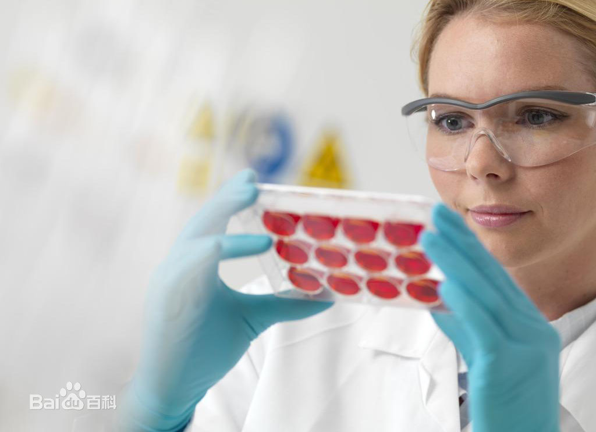

基因工程
基因工程（genetic engineering）
又称基因拼接技术和DNA重组技术。
所谓基因工程是在分子水平上对基因进行操作的复杂技术，是将外源基因通过体外重组后导入受体细胞内,
使这个基因能在受体细胞内复制、转录、翻译表达的操作。基因工程是生物工程的一个重要分大脑彩虹图,
大脑彩虹图，它和细胞工程、酶工程、蛋白质工程和微生物工程共同组成了生物工程。所谓基因工程（genetic engineering）
是在分子水平上对基因进行操作的复杂技术。它是用人为的方法将所需要的某一供体生物的遗传物质——DNA大分子提取出来
，在离体条件下用适当的工具酶进行切割后，把它与作为载体的DNA分子连接起来，然后与载体一起导入某一更易生长、
繁殖的受体细胞中，以让外源物质在其中“安家落户”，进行正常的复制和表达，从而获得新物种的一种崭新技术。
它克服了远缘杂交的不亲和障碍。

基因工程技术
- 世界粮食奖和沃尔夫农业奖得主力挺转基因
- 普通米诺鱼基因新发现 有助于人类心脏疾病研究
- 基因突变50厘米小猪令人惊奇
- 纳米中草药助奶牛安度苦夏
- 老鼠鹌鹑抢先试吃转基因米
- 意大利发现10米长史前鲸鱼化石
- 世界第一高马身高205.7厘米
- 玉米秸秆饲料加工新法
- 印度发现身长不超10毫米的微型青蛙
- “浪漫的逃亡”导致猫鼬后代70%继承其他种群基因
- 克隆牛“牡丹”雪中待产
- 克隆牛“牡丹”再次难产 三大关口威胁牛妈妈
- 世界粮食奖和沃尔夫农业奖得主力挺转基因
- 袁隆平种出了“海水稻”
- 超级稻20年：累计推广种植10.9亿亩 增收600亿公斤稻谷
- 农业“嫁接”光伏，结什么果？
- 农用聚磷酸铵引领磷肥液体化新方向
- 秸秆颗粒肥研制成了
- 葡萄牙发现鸭子感染H5N2型禽流感病毒
- 将植物基因植入动物体内 科学家造出“菠菜”猪